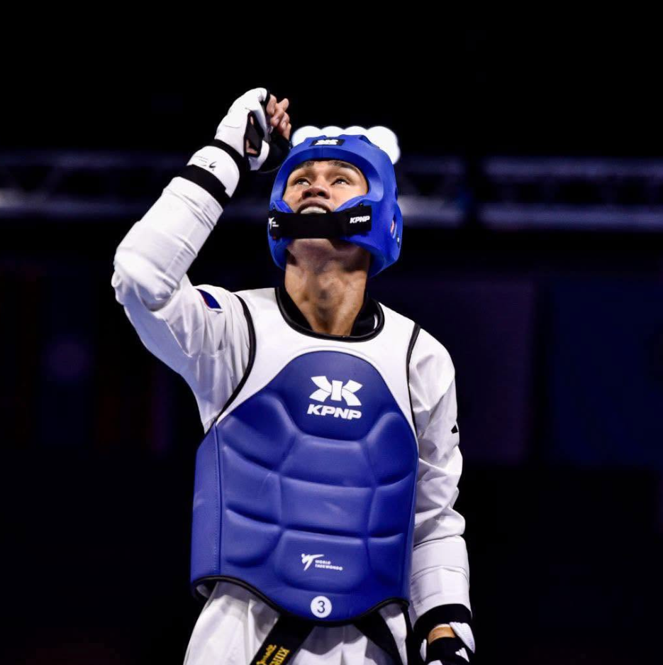
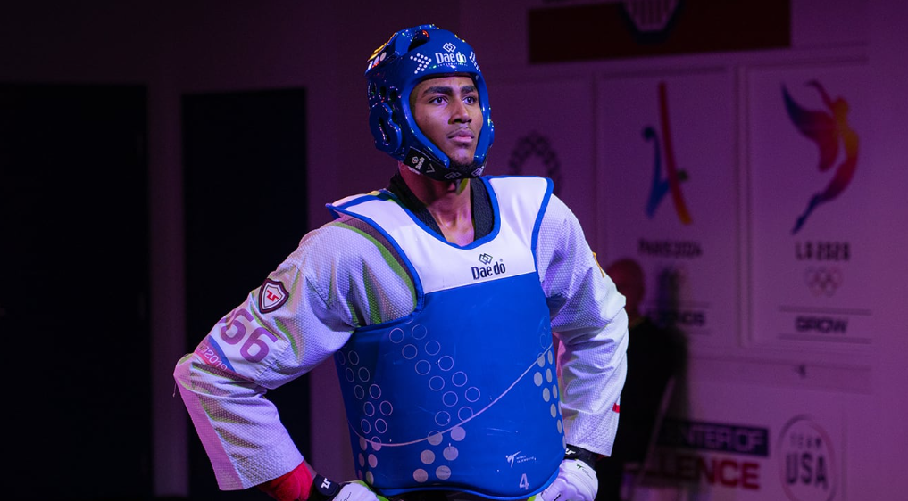
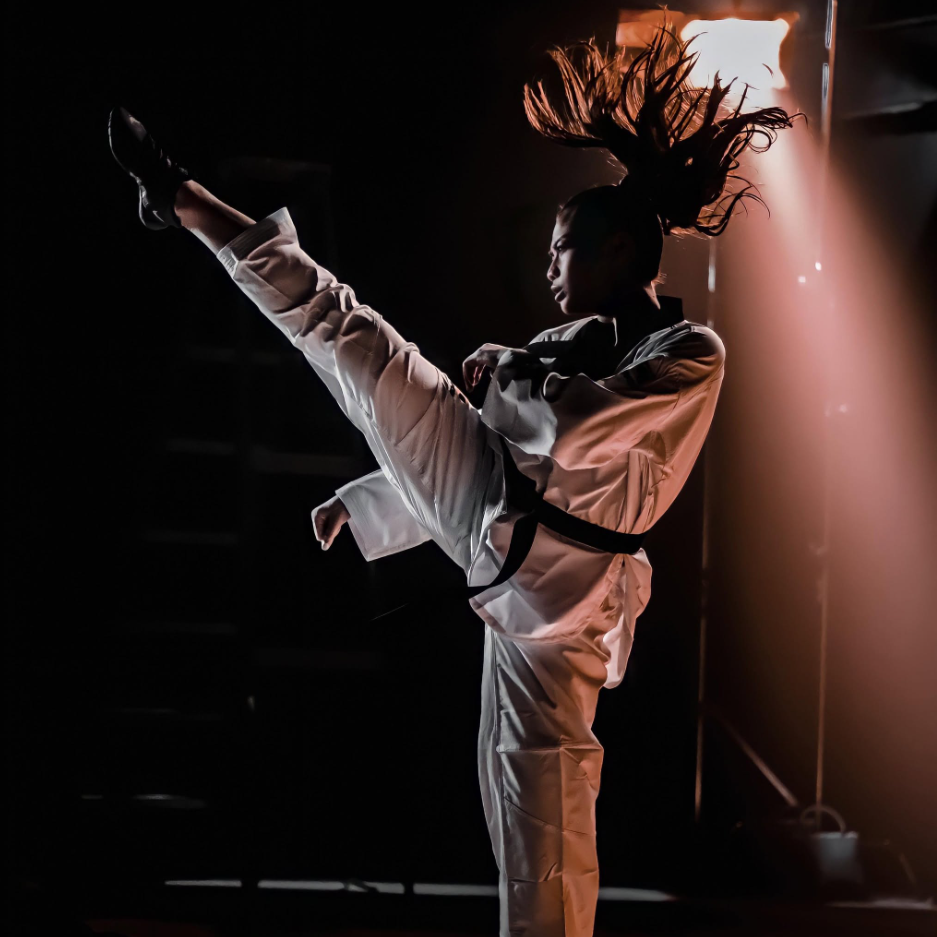
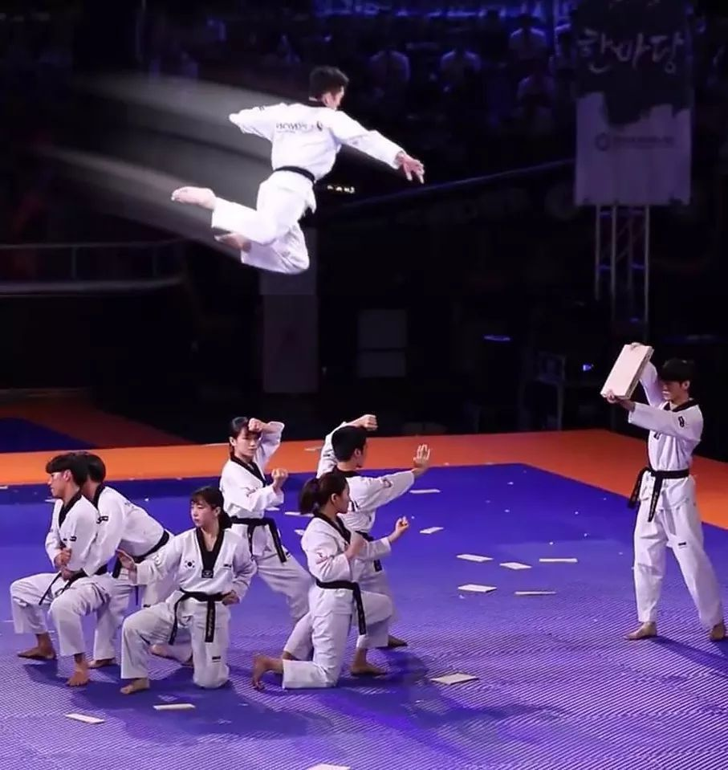

ABOUT OUR ACADEMY
WHAT WE STAND FOR
COURTESY & INTEGRITY
We commit to the highest standards of courtesy, integrity, and respect. Every student learns the tenets of Taekwondo both on and off the mat.
PERSEVERANCE
The true victory in Taekwondo lies in mastery of the self. We forge perseverance, self-control, and deep mental focus through disciplined training.
INDOMITABLE SPIRIT
We are more than a dojang. We are an inclusive, supportive family committed to building indomitable spirit and lifting each other up.
TAEKWONDO MASTERS
MEET OUR INSTRUCTORS

MASTER BARBOSA
TAEKWONDO INSTRUCTORS
7th Degree Black Belt with over 25 years of international Taekwondo coaching experience. Specializes in Poomsae, Kyorugi, and Olympic-level competition training.
MASTER NIKOLAS
TAEKWONDO INSTRUCTORS
5th Degree Black Belt specializing in advanced kicking techniques, sparring strategy, and Taekwondo fitness conditioning programs. and Olympic-level competition training.
MASTER PAULINE
TAEKWONDO INSTRUCTORS
4th Degree Black Belt passionate about self-defense applications, flexibility training, and youth Taekwondo development programs. and Olympic-level competition training.
TRAINING PHILOSOPHY
THE JOURNEY NEVER STOPS
We believe Taekwondo is a lifelong pathway to self-cultivation. There are no shortcuts—only patient practice, focused precision, and a relentless pursuit of the next degree of mastery. Through Poomsae, Kyorugi, and dedicated conditioning, every student discovers their true potential.
READY TO BEGIN YOUR JOURNEY?
Claim your 100% free premium trial class today. Meet our world-class Taekwondo instructors and begin your journey.